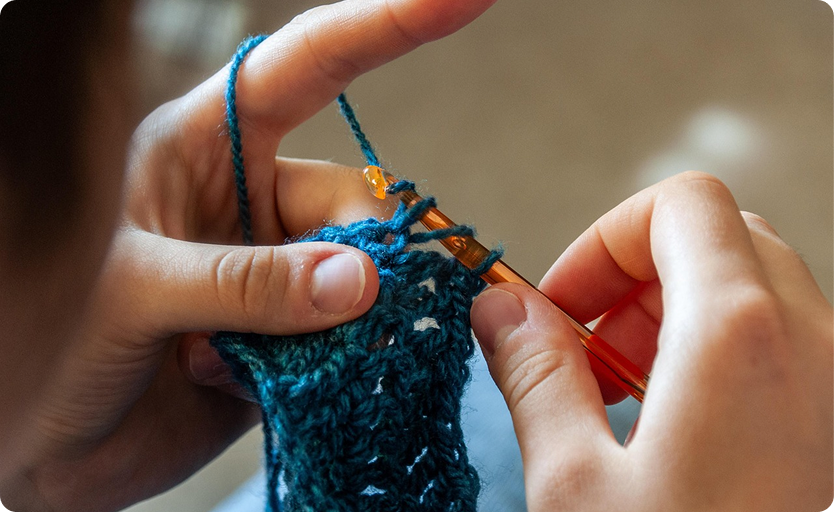
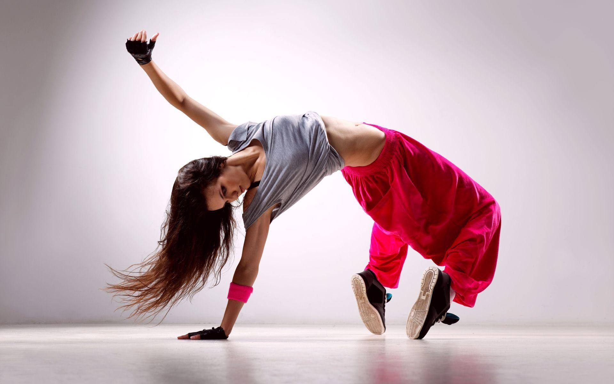

MY HOBBIES
This page shares the activities I enjoy in my free time, highlighting the hobbies that help me relax, stay creative, and grow as a person.

CROCHETING
I love crocheting because it feels calming and enjoyable. It allows me to be creative and turn simple yarn into something meaningful. One of my favorite things to make is cute handmade dolls. Seeing the final result makes me feel proud and satisfied.

WATCHING MOVIE
I enjoy watching movies in my free time, especially thriller and horror genres. I like the suspense and unexpected plot twists that keep me focused. Horror movies are exciting because they give me an adrenaline rush. Watching movies is also a fun way for me to relax and escape from daily stress.

DANCING
I like dancing because it makes me feel happy and confident. It helps me express my emotions through movement. Dancing is also a great way to stay active and energized. Whenever I dance, I feel more refreshed and positive.

LISTENING TO MUSIC
Listening to music is one of my favorite daily activities. I especially enjoy pop and K-pop songs because they are catchy and uplifting. Music helps improve my mood and keeps me motivated throughout the day. Sometimes, I listen to music while studying or relaxing.